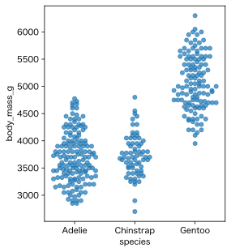

積み重ねドットプロット
パーマーペンギン（palmerpenguins）のスウォームプロットは、どうしても不自然な鎖が伸びてしまう。Sinaplot（シーナプロット）は良いのだが、ジッターが重なってしまうことがある。何とかこの2つの良い点を合わせられないか。
ChatGPT 5.2 Pro と話していて、次のようなプロットが良いかもしれないと思った。ChatGPTはこれを「積み重ねドットプロット」（stacked dotplot）と呼んだが、一般に言うstacked dotplotとは少し違うようである。

実装は以下の通り。
import numpy as np
import pandas as pd
import matplotlib.pyplot as plt
def stacked_dotplot(
df, x, y, ax=None,
s=20, width=0.35, pad=1.05, seed=0,
y_pad=0.05, # 上下余白（割合）
**scatter_kws
):
if ax is None:
ax = plt.gca()
# ---- 1) 欠損/非有限を同じ行で除外 ----
d = df[[x, y]].copy()
d = d.dropna(subset=[x, y])
d = d[np.isfinite(d[y].to_numpy())]
if d.empty:
return ax
# ---- 2) カテゴリ→コード（フィルタ後のデータだけで作る）----
cat = pd.Categorical(d[x])
codes = cat.codes.astype(int) # 長さ = len(d)
yv = d[y].to_numpy(dtype=float) # 長さ = len(d)
ncat = len(cat.categories)
# ---- 3) 軸範囲（先に固定して変換を安定させる）----
ax.set_xlim(-0.5, ncat - 0.5)
y_min, y_max = np.min(yv), np.max(yv)
span = (y_max - y_min) if (y_max > y_min) else 1.0
extra = span * y_pad
ax.set_ylim(y_min - extra, y_max + extra)
dpi = ax.figure.dpi
# マーカー直径（pixel）
if s <= 0:
raise ValueError("s must be > 0")
diam_pix = np.sqrt(s) * dpi / 72.0 * pad
# x方向の pixel/data 換算
y_ref = (y_min + y_max) / 2
px0 = ax.transData.transform((0, y_ref))[0]
px1 = ax.transData.transform((1, y_ref))[0]
pix_per_data_x = abs(px1 - px0)
if pix_per_data_x == 0:
pix_per_data_x = 1.0
step_x = diam_pix / pix_per_data_x # 直径ぶんのx(data)ステップ
# ---- 4) y を pixel 空間でビン分け ----
y_pix = ax.transData.transform(np.c_[np.zeros_like(yv), yv])[:, 1]
# y_pix はフィルタ済みなので NaN/inf にならない想定
bin_id = np.floor(y_pix / diam_pix).astype(int)
rng = np.random.default_rng(seed)
xs = np.empty_like(yv, dtype=float)
for c in range(ncat):
mask_c = (codes == c) # 長さ len(d)
idx_c = np.where(mask_c)[0]
if idx_c.size == 0:
continue
bins_c = bin_id[mask_c] # 長さ一致で安全
for b in np.unique(bins_c):
idx = idx_c[bins_c == b]
# 等間隔のまま並びだけランダム（見た目の規則性を軽減）
idx = idx[rng.permutation(idx.size)]
n = idx.size
if n == 1:
offsets = np.array([0.0])
else:
offsets = (np.arange(n) - (n - 1) / 2) * step_x
# 幅超過時は圧縮（このとき非重なり保証は弱くなるので width か s を調整）
max_abs = np.max(np.abs(offsets))
if max_abs > width:
offsets = offsets * (width / max_abs)
xs[idx] = c + offsets
ax.scatter(xs, yv, s=s, **scatter_kws)
ax.set_xticks(range(ncat))
ax.set_xticklabels(cat.categories)
ax.set_xlabel(x)
ax.set_ylabel(y)
return ax
使い方の例：
import seaborn as sns
penguins = sns.load_dataset("penguins")
fig, ax = plt.subplots(figsize=(4.0, 4.8))
stacked_dotplot(penguins, x="species", y="body_mass_g", ax=ax, s=25, alpha=0.7)